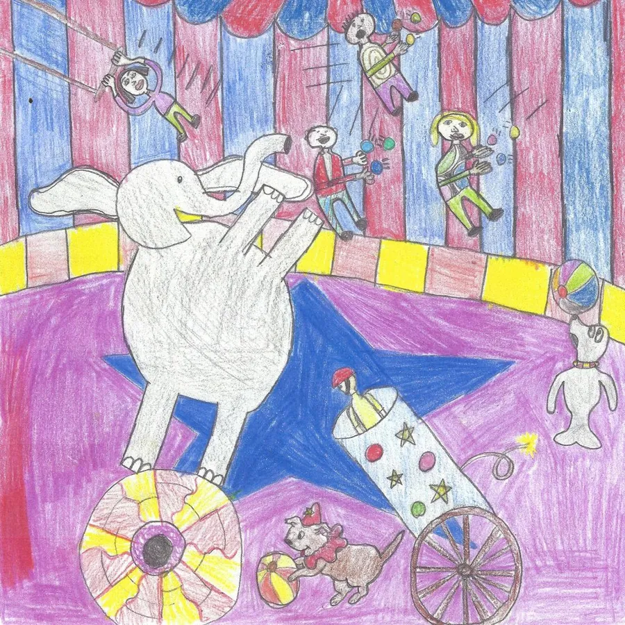

Max Ochs
Folklorist · Musician · Poet

Earflings
A collaboration of previously unrecorded original compositions by legendary folk artist Max Ochs with New Jersey jazz/funk band Rugburn. Currently slated for an LP vinyl release!

No Words For It, filmed by Micah Seidel